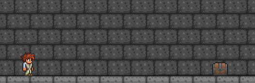
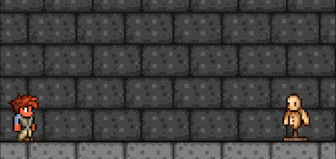
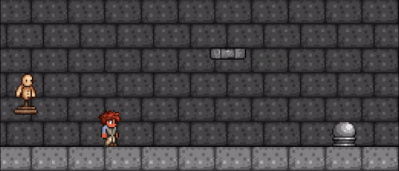
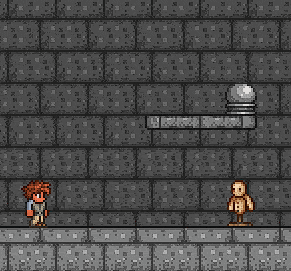
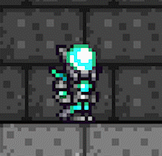

Classe baseado no uso de armas de fogo e arcos, utilizando de munições ou flechas que fazem diferentes coisas, possuem um alto dps e uma defesa razoável, mas as armas são muito sem criatividade.
Um arco cuja habilidade se baseia em quando você acerta uma flecha outra flecha fantasma surje e persegue o inimigo dando dano extra, craftada por fragmentos de Vortex do pilar de Vortex.

Arma de fogo de tiro rápido que tem alta chance de economizar munição dropada pelo MoonLord.

Munição para arco e para armas de fogo craftadas pelo minério de clorofita que é o minério de endgame pré-Moonlord, a bala possui o efeito de perseguir os inimigos, enquanto a flecha precisa rebater em um bloco para poder perseguir o inimigo mais próximo.


